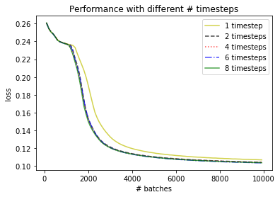

More Than 2 Timesteps
Since 2 timesteps appear to work better than 1, it is worth investigating
whether even more timesteps could yield further benefits.
1, 2, 4, 6, 8 timesteps were tested, each of which was repeated 10 times.
The average of the 10 repetitions for each amount of timesteps is depicted in the
following figure:

Clearly, more than two timeteps are not beneficial for this task.